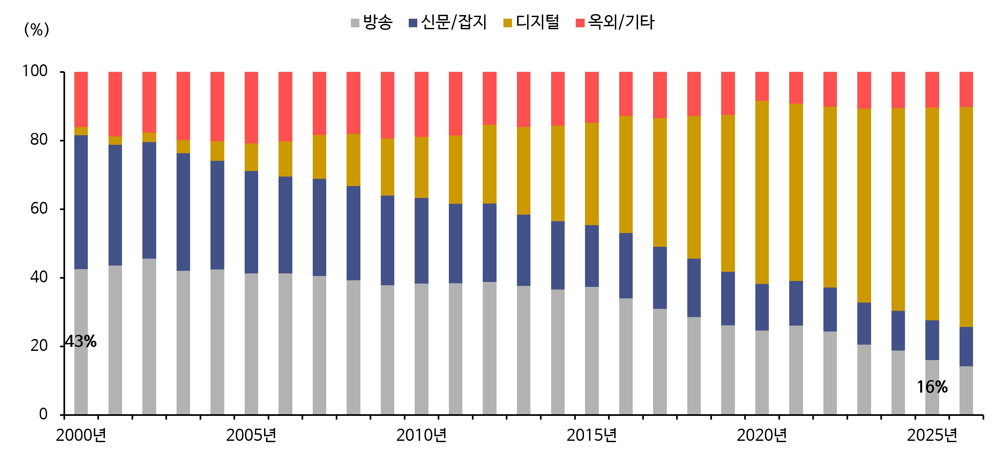
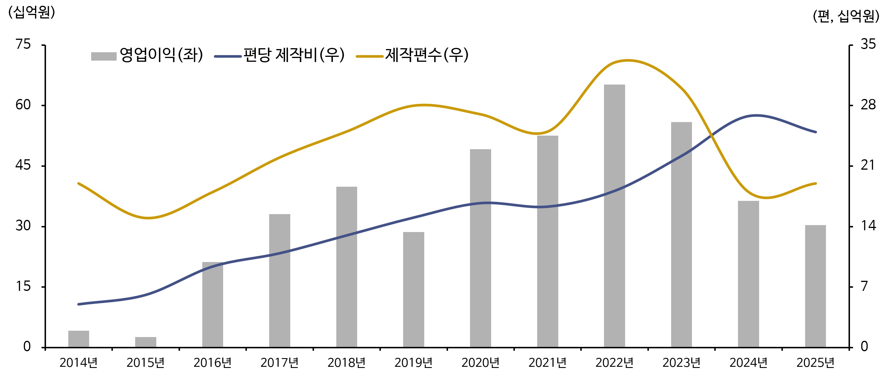
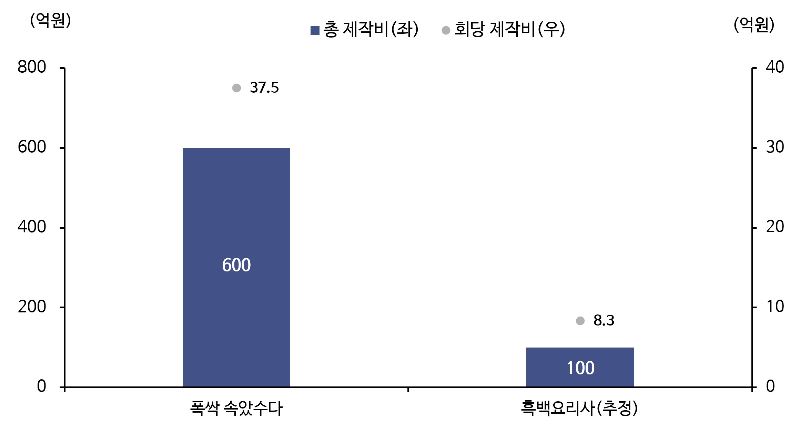
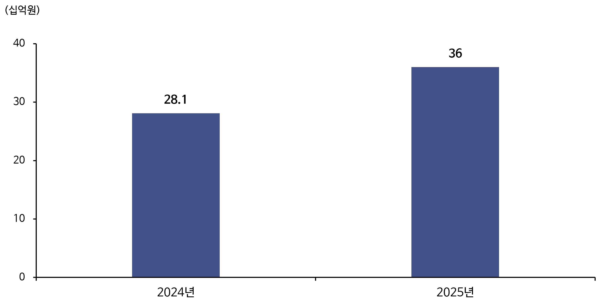

최신 예능으로는 <산골총각 영웅>, <도깨비 10주년 여행>이 떠오른다. 전 연령층을 아우르는 유명한 스타들이 이끄는 예능이다. 임영웅이 중심에 있는 <산골총각
영웅>은 시즌제다. 시청률(4~6%)과 넷플릭스 순위(예능 상위권), 화제성에서 기획 대비 회차를 늘려 제작할 정도로 좋은 성과를 거뒀다. 각박한 사회 속 ‘힐링’ 예능으로 주목받았다. <도깨비 10주년 여행>은 K-드라마
중심에 있었던 드라마 <도깨비>의 네 주연 배우들이 촬영지를 찾아다니며 여행하는 예능이다. 10년 전 추억을 소환해 시청자들의 향수를 자극했다. <솔로지옥>,
<나는 SOLO> 등 일반인 중심 연애 예능은 어느덧 일상 대화와 SNS에서 빠질 수 없는 주제가 됐다.
왜 예능이 대세일까? [제작사]는 투자환경 악화 속에서 수익성을 극대화하고, [플랫폼/바이어]는 구독자를 락인시킬 수 있는 효과적인 콘텐츠 편성 니즈에 부합하며 [시청자] 입장에서는 콘텐츠
몰입이 더욱 용이하기 때문이다.
기존 대세였던 K-드라마 제작산업은 아이러니하게도 2021년 <오징어 게임> 이후 불황이 닥쳐왔다. 드라마 수익률은 제작비(분모) 대비
국내편성(방송사)/협찬PPL(광고주)/해외판권(글로벌 OTT 및 채널)으로 얼마나 매출(분자)을 일으키는지가 수익률의 핵심이다. 제작비 대비 각 항목매출의 비율을 ‘리쿱비율’이라 부른다. 제작비를 각 판매처로부터 긴 시간에 걸쳐 리쿱=‘회수’하는 구조다.
불황의 이유는 1) 제작비가 치솟았다. K-콘텐츠의 인기 급부상으로 배우/PD/작가 등 핵심 크리에이터의 몸값이 대폭 상승해서다. 국내 대표 드라마 스튜디오 회사인 스튜디오드래곤의
편당 제작비(스튜디오드래곤의 매출원가를 작품수로 나눈 값)는 2014년 50억 원 → 2021년 163억 원 → 2024년 268억 원까지 올랐다. 2) 해외판권을 굵직굵직하게 구매해가는 큰
바이어였던 중국이 10년 째 제한돼 있는데다 3) TV광고수익 악화도 더해졌다.

[그림 1] 국내 매체별 광고시장규모 비중
(출처: KOBACO(방송통신광고시스템) 방송통신광고비조사)
TV광고는 방송사의 주요 수익원이기에 방송사 수익 악화 → 제작사에게 주는 리쿱비율 하락 → 급기야 드라마 편성 자체를 줄이기 시작했다. 스튜디오드래곤은 CJ 그룹 계열의 tvN 캡티브 채널을 둔 국내 대표 드라마 스튜디오 회사이다. 제작편수는 2021년 25개 → K-콘텐츠 열풍으로 글로벌 편성이 쏟아졌던 2022년 33개 → 2024~25년은 20개도 채 되지 않았다.

[그림 2] 스튜디오 드래곤 실적 추이
(출처: DART, 스튜디오드래곤 매분기 실적 보고서와 IR 자료)
2021년 이후 글로벌 OTT 오리지널 콘텐츠(독점 방영)가 유난히 많아진 배경이다. 오리지널 콘텐츠의 대표적인 예는 넷플릭스의 <오징어 게임>, 디즈니플러스의 <무빙> 등이 있다. 필자가 커버하는 주요 상장사 설명에 따르면 제작사 기준 오리지널 콘텐츠는 플랫폼으로부터 제작비 전액 + 10~15% 마진을 얹어 받는다. 제작비 대비 총 리쿱비율은 110~115%가 되고, 열심히 영업을 통해 협찬/PPL을 받아 올 필요 없이 작품에만 집중할 수 있다. 그러나 영구적인 IP 권한은 포기하는 구조다. IP 권한은 제작사가 아닌 제작비를 전액 투자한 OTT에게 돌아간다. 아무리 대흥행을 하고, 부가수익을 일으켜도 수익성(매출총이익률)은 10~15%가 끝이다. <오징어 게임>은 메이드 인 코리아(Made In Korea)일 뿐, 미국 작품이다.
반면, 예능은 1) 짧지만 꽉 찬 포맷으로 구성돼 시즌제/리메이크 활용이 용이하고, 2) 다양한 장르와 스토리로 전개될 수 있다. 3) 쇼츠, 클립 재생산에 적합해 마케팅에 유리하고, 4) 스타 연예인 중심의 캐스팅 의존도가 상대적으로 낮고, 일반인·전문가 등 다양한 출연자를 활용할 수 있는 예능이 많은 편이기 때문에 낮은 제작비 대비 높은 화제성으로 드라마 대비 회당 제작비가 상대적으로 낮다. 예시로 언론을 통해 알려진 <폭싹 속았수다>는 총 제작비 600억 원, 회당 제작비 37.5억 원 vs. 셰프 서바이벌 예능 <흑백요리사 1>는 총 제작비 100억 원, 회당 제작비 8.3억 원에 불과한 것으로 추정된다. 많은 제작사들이 비용 상승기 당시 생존을 위한 저비용, 고효율 전략으로 예능 제작 확대를 촉진한 요인 중 하나로 볼 수 있다.

[그림 3] 드라마 vs. 예능 제작비
작품별 총제작비 및 회당 제작비는 공개·추정 자료 기준으로 단순 비교한 수치임
(출처: 흑백요리사는 신한투자증권 추정, 폭싹 속았수다는 언론보도)
예능의 글로벌화는 2023년 <피지컬:100>에서 가능성과 잠재력을 엿봤다. 한국 첫 시즌 이후로 포맷 자체가 다양하게 수출 및 리메이크 되어오고 있다. 미국/이탈리아/프랑스 등
단일 국가 뿐 아니라 ‘아시아’ 권역으로도 확장됐다. 2024년 <흑백 요리사>는 K-예능의 글로벌 진출과 수익화를 증명했다. <흑백 요리사>는 한국 최초로 넷플릭스 글로벌 TOP 비영어권 TV부문 1위를
3주 연속 기록했고, 공개 직후인 10월 넷플릭스는 시즌2를 바로 발표했다. 시즌2에서는 그간 없었던 다양한 PPL/협찬도 포착됐다. 서바이벌 중 셰프 전용 팬트리에는 CJ제일제당의 식품 브랜드인 ‘비비고’로 가득 채워졌고, 셰프들이 미션 때 활용한 키친 시스템과 장비는 모두
‘한샘’ 지원이었다. 수익원이 추가됐다.
2025년 뷰티 크리에이터들간의 서바이벌을 담은 또 다른 예능은 <저스트 메이크업>이다. 국내는 쿠팡 플레이, 해외는 아마존프라임비디오를 통해 전파를 탔다. 유명 뷰티
크리에이터들이 실제로 어떤 화장품 브랜드 제품/상품을 쓰는지 카메라에 생생하게 담겼다. 다양한 뷰티 브랜드 PPL 수익화가 가능했다. K-Beauty와 에스테틱의 성장을 촉진시키고, 예능의
커머스 기능을 현실화했다.
<흑백 요리사>와 <저스트 메이크업>을 제작한 스튜디오슬램의 매출액은 2025년 360억 원으로 2024년 281억 원 대비 +28% 늘었다. 예능의 장점인 ‘높은 가성비’, ‘높은 시즌제/리메이크 활용도’를 보여주는 대표적인 사례들이다. 우리나라에는
‘서바이벌’ 예능이 유독 많다. 가파른 한국 경제 성장의 기반은 ‘무한하고 치열한 경쟁’이다. 늘 ‘경쟁’에 직면해 온 고유한 한국 역사가 다양한 장르의 서바이벌 리얼리티 만큼은
가장 세련되게 만들 수 있는 원천이 되지 않았을까 싶다.

[그림 4] <스튜디오 슬램> 매출액
(출처: DART, 스튜디오슬램 감사보고서)
예능의 큰 장점인 ‘화제성’이 극대화되는 곳은 조금 더 ‘일반인’ 중심의 예능 프로그램이다. <흑백 요리사>와 <저스트 메이크업>은 이미 대중들에게 잘 알려진 셰프와 메이크업 아티스트들로 꾸려졌다면, 대세 예능은 주로 순수 일반인들로 구성된다. 장르 또한 다양하다. 결혼(<커플팰리스>), 연애, 부부(<오은영 리포트>), 가족, 출산/육아(<금쪽같은 내 새끼>), 이혼(<이혼숙려캠프>), 직장, 여행 등 인간관계와 일상생활 전반에 걸쳐 퍼져있다. 연예인이 이끄는 리얼리티 예능은 현실감이 떨어지고, ‘나와는 이미 다른 사람’으로 거리감을 느끼지만, 일반인 예능은 ‘나와 가까운 존재, 비슷한 존재’로 인식해 ‘사회적 비교’가 작동하고, 나와 타인을 비교하며 콘텐츠 몰입감 또한 깊어지기 때문이다.
그 중 가장 화제성과 파급력, 전파 속도가 빠른 것은 단연 ‘연애’
리얼리티다. 대표적으로 <나는 SOLO>, <솔로지옥>, <환승연애> 등이 있다. 연애 리얼리티는 대규모 세트와 고난도 특수효과가 필요한 경쟁 서바이벌에 비해
상대적으로 제작비 부담이 낮다. <나는 SOLO>의 경우, 지방에 경치 좋은 펜션이면 충분하다. 심지어 대서사, 대본, 스토리도 자동적으로 생성된다. 10명을 일주일간 한 공간에
두면, 그 안에서 호기심/호감/질투/갈등/화해/새로운 관계/배신/반전 등 인간관계에 반드시 필요한 감정이 자연스럽게 얽히고 설킨다.
콘텐츠의 화제성이 끝없이 이어진다. 출연자의 삶이 계속 관찰되고 추적되기 때문이다. 특히 연애 리얼리티는 전연령층을 아우르면서도, 비교적 ‘연애’라는 공통 주제, 고민거리를 실제 개인 삶에서 공유하고 있는 ‘젊은 시청 수요’가 더 많다. 그만큼 모바일/인터넷/SNS에 친숙한 젊은 인구가
2차, 3차 쇼츠/클립 콘텐츠를 재생산하며 SNS 바이럴 효과를 한껏 끌어 올린다. 마치 팬덤이 아티스트를 덕질하듯 움직이기도 한다. 예능을 통해 일반인이 스타로 탄생하는 과정이다. 최근
가장 대표적인 예는 <솔로지옥5>에 출연해 화제의 중심에 선 최미나수다. 기획사 매니지먼트를 받는 스타로 성장했고, tvN의 <킬잇: 스타일 크리에이터 대전쟁>에
출연했다. 현재는 워터 스포츠 브랜드를 비롯해 스킨케어, 패션, 뷰티 디바이스 등 다양한 분야에서 광고계 블루칩으로 각광받고 있다.
K-예능/리얼리티는 2025년 중요한 전환점을 맞이했다. 2025년 9월 2일 넷플릭스는 한국에서 <예능 페스티벌 2025>을 진행했고, 디즈니플러스는 예능 공개 주5일제를 본격화하는 등 적극적인 투자를 예고했다. 2025년 12월에 공개된 <흑백 요리사2>는 한 번에 모든 에피소드가 올라오지 않고, 일주일에 한 번, 매주 화요일
오후 5시에 공개됐다. 구독자 입장에서는 ‘밥친구’로
인식됐다.
OTT의 전략 변경에서 중요한 시사점이 있다. 과거 OTT들의 사업 전략 방식은 ‘대형 콘텐츠(텐트폴)를 공개한 후, ‘몰아보기, 정주행’을 유도, 시청이 완료되면 다음 콘텐츠, 시즌제로 넘어가는
구조’였다. 넷플릭스가 주요 마케팅 키워드로 ‘Binge-watching(정주행)’을 내세우며 대중화시킨 단어이기도 하다.
그러나 이제는 대형 바이어/플랫폼 입장에서도 텐트폴에 투입되는 기회비용과 제작비가 매우 부담이다. 시청자들의 과몰입을 유발시킬 수 있는 예능을 매주 배치해 ‘구독자를 매주 붙잡아 놓는 전략’으로 선회한 것이다. 비싼 텐트폴도 물론 꾸준히
있지만, 중간중간 예능을 촘촘하게 편성하고 있다. 과거 OTT는 예능을 ‘가끔 터뜨려주는 콘텐츠’로 인식했다면 이제는 ‘가성비 좋고 락인 효과에 탁월한 효자 콘텐츠’로 급부상시키고 있는 셈이다.
이제 미디어 업계에서 예능/리얼리티 제작은 선택이 아닌 필수다. 콘텐츠의 주요 구성원인 ‘시청/소비자, 제작자,
바이어/플랫폼’ 삼박자의 니즈에 완벽히 부합하기 때문이다. K-예능/리얼리티의 전세계 영향력과 호황기는 더욱 길어지겠다.